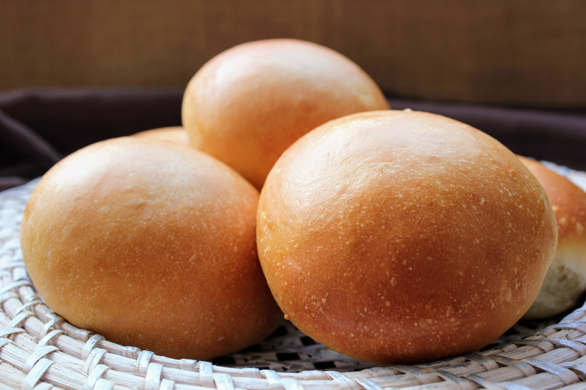

Soft, fluffy bread or milk rolls

Milk bread, milk rolls, half nights or Vienna bread, is ideal for
preparing mid-morning snacks or breakfasts for children. It has all the
properties of bread but is also enriched with milk, which makes it very
tender and fluffy with a sweet point that you will like very much.
These types of recipes of scones, usually have a common denominator.
It is a brioche type dough similar to Christian or milk rolls, the
recipes that most reminds me of my childhood. They can be filled with
both sweet and salty and are great if we open them in two, we pass them
through the toaster and then spread with butter, especially if they are
made of the day before and already begin to harden a little.
Ingredients
- 330 g. of wheat flour with strength W220, flour 000 or wheat
flour with 11,5 - 12,5 % protein
- 9 g. of fresh baked yeast or 3 g. of freeze-dried baker's yeast
- 125 ml. of whole milk
- 25 g. butter (ointment texture)
- 50 g. of sugar
- 1 egg
- spoon of essence of vanilla
- spoon of fine salt
Steps
Preparation of milk bread dough
- In a bowl add the milk, sugar, vanilla essence, salt and egg.
Whisk together. Add the butter (the butter must be melted and
warm) and continue beating until it is integrated with the other
ingredients. The butter can be replaced with extra soft virgin
olive oil although in less proportion, in this case 20 ml. of
oil.
- We add the flour gradually as we integrate it with the liquids.
We also add the yeast. First with the help of a fork and then
with the hands we integrate the ingredients. We knead until we
get a homogeneous dough ball. It is not necessary to work the
dough long, it is a question of homogenizing all the ingredients.
Rest, shape and baking of milk bread
- We leave the dough in the same mixing bowl and cover it with
transparent film. Ferment the dough in a warm place for not less
than 2 hours, until its volume has doubled.
- Pour the fermented dough over a floured surface and work it for a
few seconds to degrease it. We make 12-13 portions of dough. Each of
the portions will have about 40 grams. We form the portions and place in
the baking dish on a vegetable paper. Let it rest a second time, in a
warm place, for another 2 hours.
- We paint the breads with milk while preheating the oven to 180º C.
- Bake the breads at 180º C, with heat above and below, without the
fan option, for 18-20 minutes. Once baked, remove them from the oven
and let them cool completely on a rack.
- Some rolls that look super good, very tender, with good crumbs
and very rich flavor. Ideal to fill with your favorite ingredients,
sweet or salty.